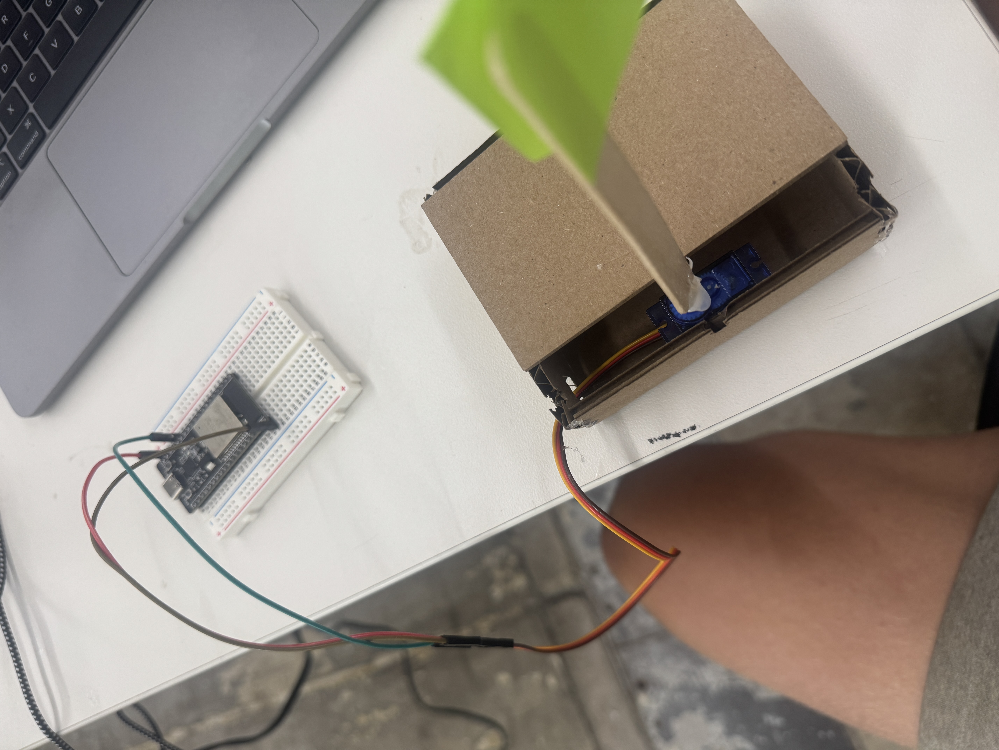

<div class="textcontainer">
<h3>Week 3: Hand Tools and Fabrication</h3>
<h4>Kinetic Sculpture</h4>
<p>
For this assignment, I threw together a quick little kinetic sculpture.
I grabbed the cardboard box from my old useless box, wired up a servo,
and made a flag out of a popsicle stick and a Post-it note. The servo
just swings the flag back and forth smoothly. It’s super simple,
but it works and looks kind of funny.
</p>
<h5>Demo</h5>
<div class="media-pair">
<div class="media">
<video
src="kineticsculpture.webm"
autoplay
muted
loop
playsinline
preload="auto"
poster="kinetic_sculpture_poster.jpg">
</video>
</div>
<div class="media">

</div>
</div>
<h5>ESP32 Servo Code</h5>
<pre><code>#include <ESP32Servo.h>
Servo s;
void setup() {
s.setPeriodHertz(50);
s.attach(13, 500, 2400);
}
void loop() {
static int a = 0, dir = 1;
s.write(a);
a += dir;
if (a >= 180 || a <= 0) dir = -dir;
delay(10); // smaller = smoother/faster
}</code></pre>
<p class="caption">ESP32 sweeps the servo to wave the flag.</p>
</div>